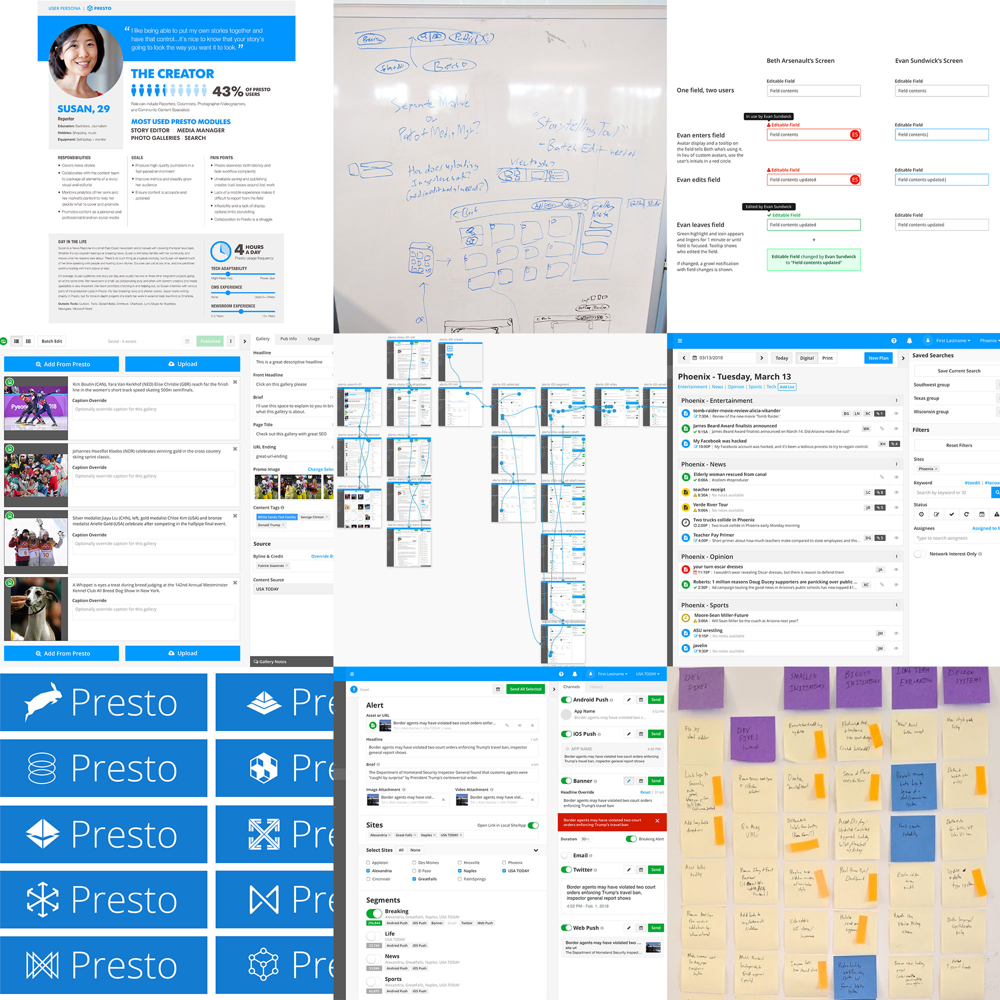
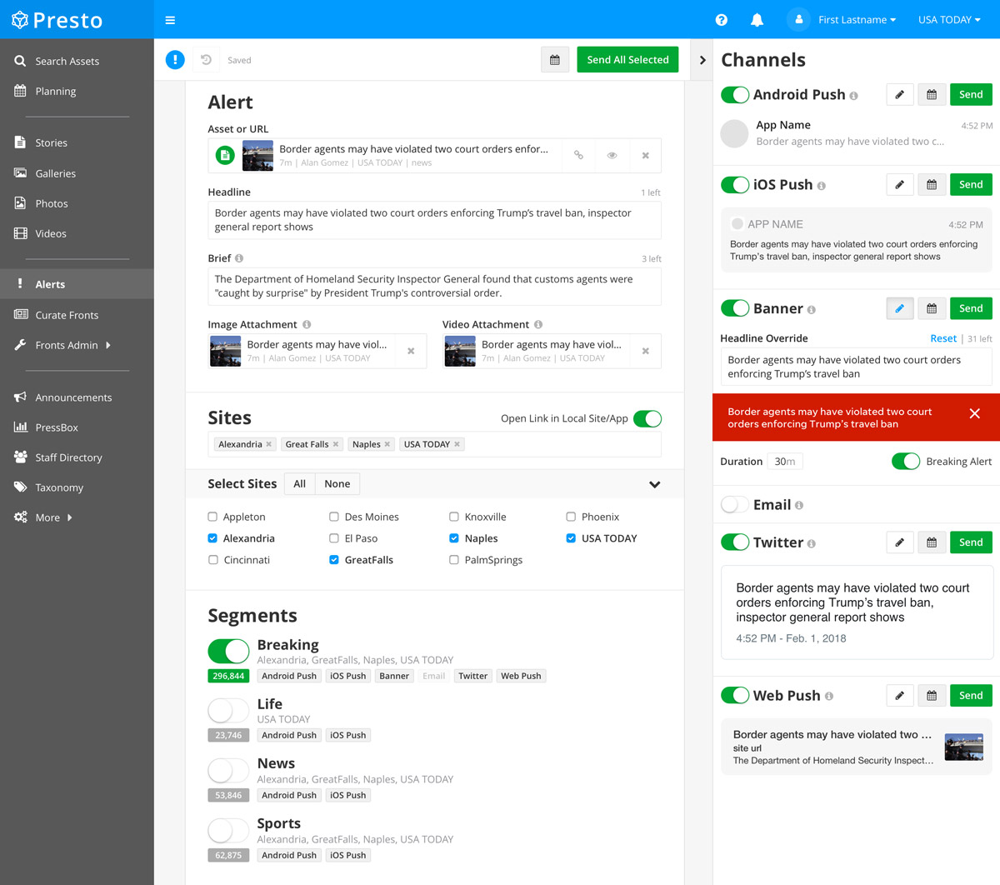
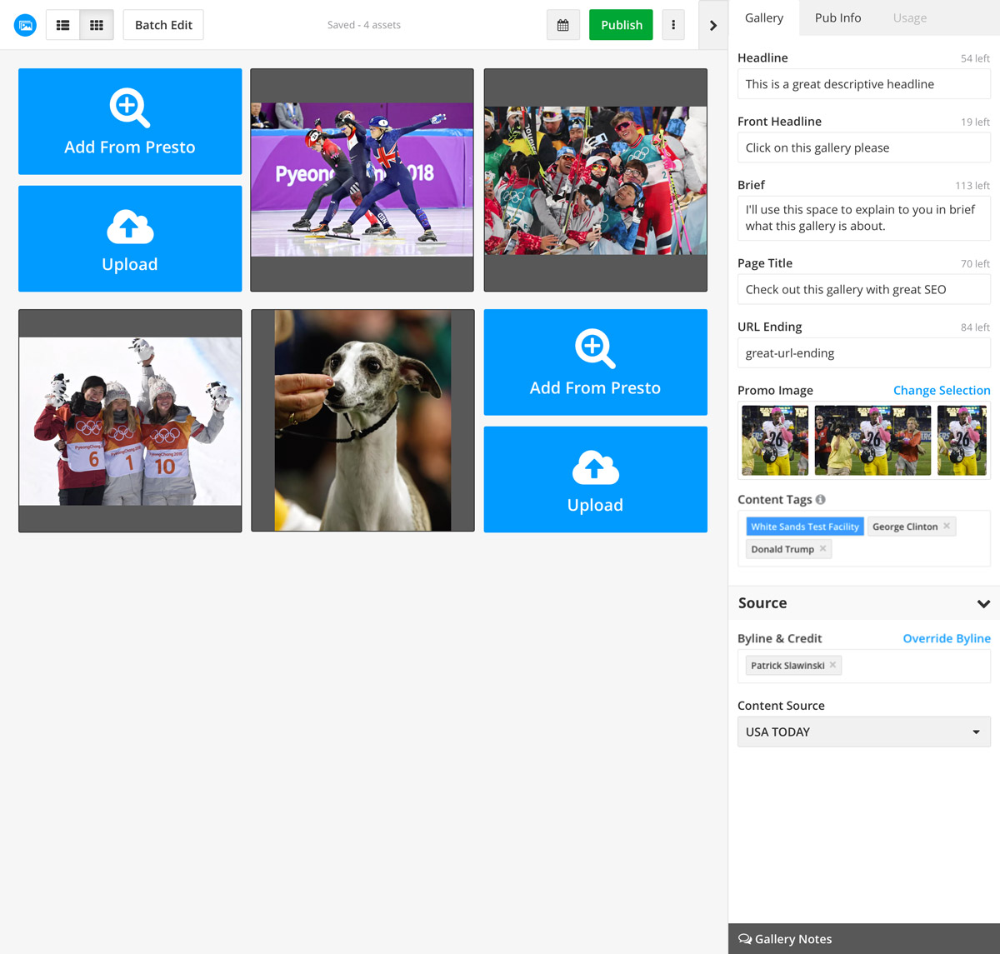
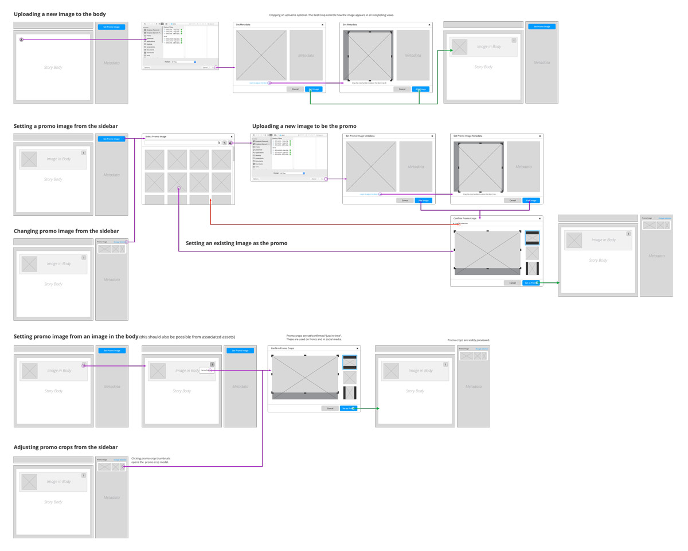
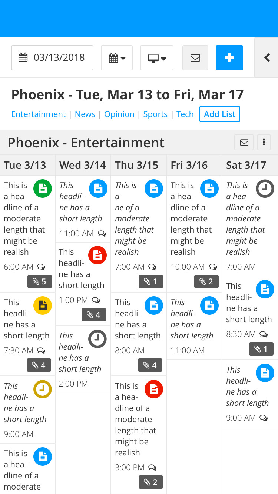
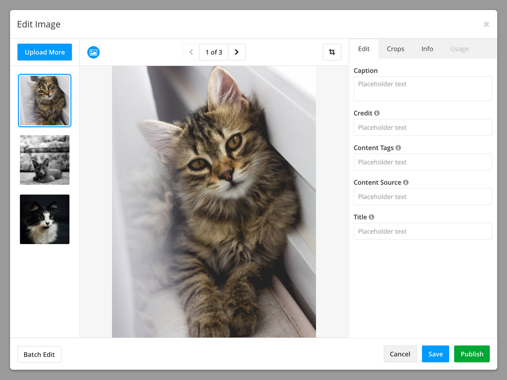
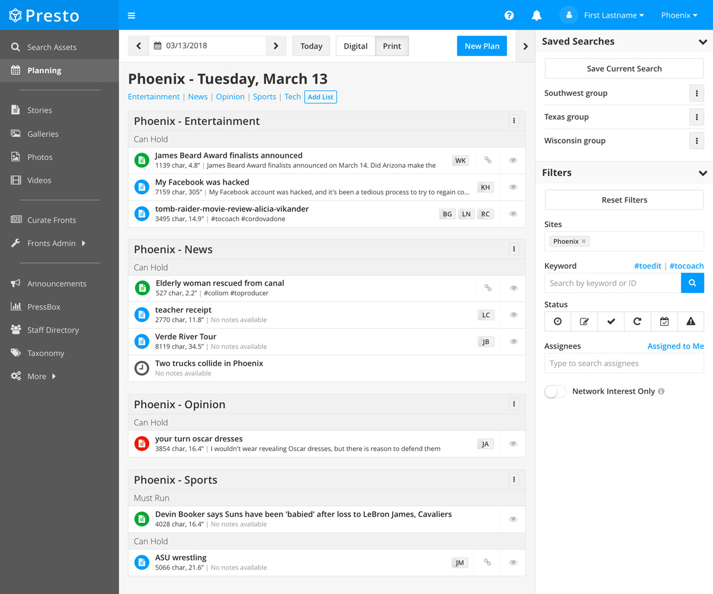
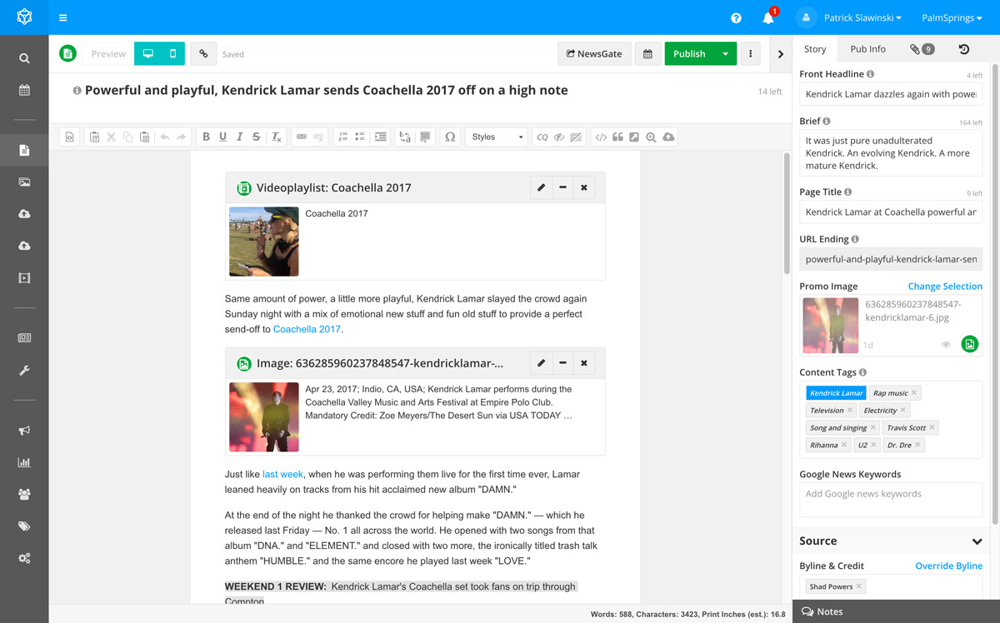

Gannett CMS 2014 - Present
Project
Gannett's custom CMS powers over 100 news sites visited by more than 100 million readers per month. Sites range in size from small local operations to the large national footprint of USA TODAY. The CMS enables cooperation and
coordination across the network as editorial resources are shared across the country and content is seamlessly adapted across sites.
Work
Patrick is the lead designer for Gannett's CMS, shepherding the tool's user interface through a long transition from legacy technology platforms and front-end frameworks to the fully updated position it's in today. Work has
included: user interviews and surveys, persona creation, style guide development, prototype building, SASS stylesheet implementation, rebranding, working within agile processes, and iterative modular UI design throughout.








The Wall VR 2017
https://www.usatoday.com/border-wall/usa-today-network-border-project-about-vr-podcasts-map/
Project
The virtual reality component of the 2018 Pulitzer Prize winning USA TODAY Network report The
Wall. This story brought together reporters, editors, photojournalists, designers, and developers from across the across the country to tell the story of life on the border between the United States and Mexico.
Work
This project involved a lot of sketching and concepting to figure out how best we could tell a story given the expected content and technological capabilities. The team executed a successful experience following some needed
pivots as some approaches worked better than others and reporting content came back differently than anticipated. Patrick focused primarily on the user interface but was also deeply involved in the overall presentation of the
reporting.
U.S. News 2012 - 2014
https://www.usnews.com
Project
U.S. News & World Report is an internationally known news publisher and producer of ranking lists.
Work
Patrick spent two years at U.S. News as a Senior User Experience Designer. He collaborated closely with designers, analysts, editorial staff, and the technical team to help keep the success of U.S. News growing. Patrick's work
with U.S. News involved every part of the site. He prototyped an updated header, footer, and site navigation structure, created infographics, designed rankings pages, prototyped article templates, created HTML/CSS buttons,
visually unified the U.S. News social media presence, designed advertising campaigns, performed usability tests, and more.
Army.mil 2006 - 2012
https://www.army.mil
Project
Army.mil is the news outlet of the United States Army's Office of the Chief of Public affairs. Beyond news, Army.mil regularly features special microsites around events, awards, and anniversaries.
Work
Patrick worked his way from the bottom to the top of the Army.mil design team. His tenure included designing and building multiple microsites, creating a shared home for all of these microsites, communicating with clients, leading a
design team,
redesigning the home page, mobile article presentation, and search experience, and designing the UI for a custom CMS.